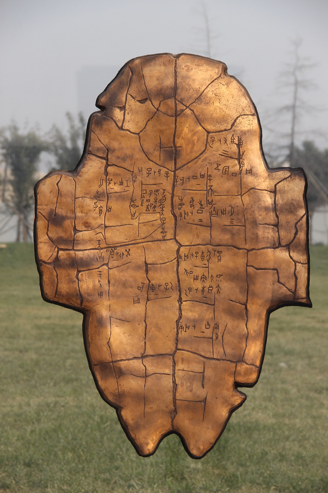
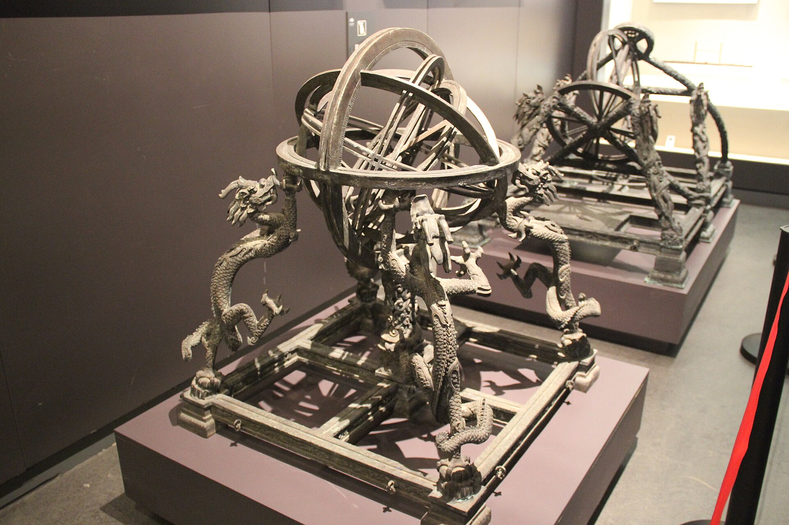

约公元前 1200 年
01 / 05
刻在龟甲上的问句
风雨会不会来？收成会不会好？战争该不该起？先民把最迫切的疑问刻在龟甲与兽骨上，借裂纹想象来自天地的回答。
这是汉字目前所见最早的成熟体系之一。当问题被记录，文明就拥有了可以回溯的坐标。
古今相接
今天，我们用数据建模未知；古人则在火与裂纹之间辨认答案。
知来处，明去处
一份可以动手阅读的古今通识图谱
卷首 / PROLOGUE
真正的“博古”，
不是记住所有年代，
而是看见每个时代，
都在回答相似的问题。
今天所谓的新问题，常能在旧经验里找到半枚钥匙。沿着器物、文字与制度往回看，再带着新的尺度向前走。
01 / 千年一线
选择年代，看看一件物如何承载一代人的问题，又如何在今天继续发声。

约公元前 1200 年
01 / 05
风雨会不会来？收成会不会好？战争该不该起？先民把最迫切的疑问刻在龟甲与兽骨上，借裂纹想象来自天地的回答。
这是汉字目前所见最早的成熟体系之一。当问题被记录，文明就拥有了可以回溯的坐标。
今天，我们用数据建模未知；古人则在火与裂纹之间辨认答案。
读史三则
器物不是沉默的证物。它的材料、尺度与纹样，都在透露一个时代如何组织生活。
技术会换代，制度会更迭；对秩序、沟通与生存的追问，却反复出现在历史里。
传统不是现成答案，而是一套可被重新理解的思考材料。
02 / 古今对读
切换四组主题，比较古人的提问与今人的回应。连续性不意味着同一种答案，而是同一种认真。

观天
古人问
汉代学者以浑天说解释宇宙，认为天如蛋壳、地如蛋黄。张衡改进浑天仪，用圆环模拟天体运行，让抽象的天空变成可以观察和演示的模型。
今人答
今天，位于贵州的 FAST 射电望远镜接收遥远天体发出的微弱无线电波。观测尺度从肉眼可见的星空，扩展到肉眼不可见的宇宙深处。
从模型到射电，我们仍在做同一件事：为看不见的秩序寻找可感知的形状。
03 / 先贤一言
温故而知新，可以为师矣。
复习旧知并不是重复过去，而是在已有经验中发现尚未看见的新联系。知识因此不只是积累，也成为继续提问的能力。
04 / 问对三题
不是考试，只是一次回望。三题之后，看看哪一条历史线索已经留在了你的脑海里。
答对了
咸通九年（868）的《金刚经》卷轴，证明雕版印刷在唐代已达到相当成熟的水平。
问对完成
3/ 3
你已经抓住了器物背后的关键线索。历史并非标准答案，而是继续追问的起点。